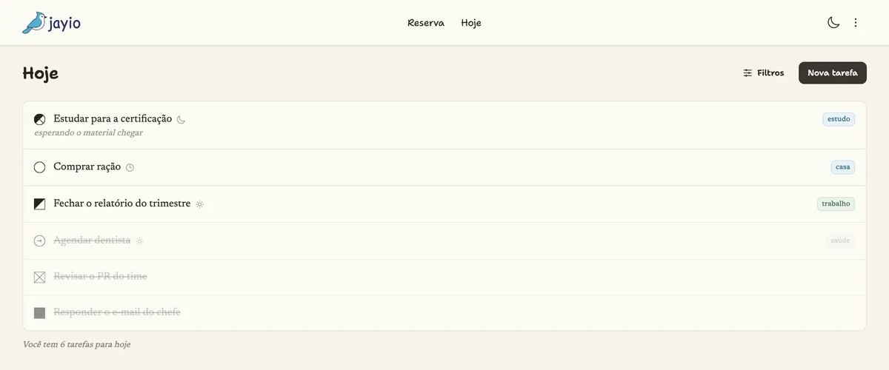
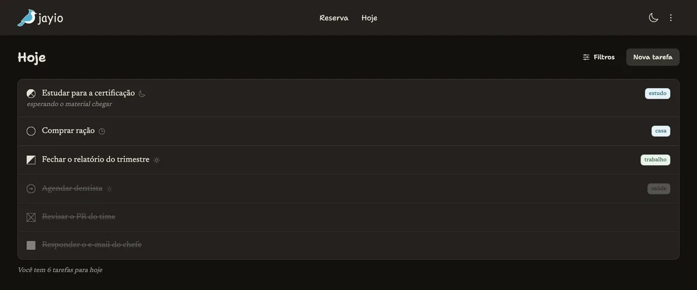

Enterre com data
Uma tarefa com data futura não fica piscando no Hoje. Ela espera no reserva e sobe sozinha na manhã do dia marcado, já sem a data: assim ela não é promovida de novo na meia-noite seguinte.
Gerenciador de tarefas · Garrulus glandarius
O gaio enterra a bolota e volta para buscar. O jayio faz o mesmo com o seu dia.
À meia-noite do seu fuso a lista se esvazia: o que ficou pela metade volta para a reserva, o que você concluiu vai para o arquivo, o que estava marcado para amanhã sobe. Nenhuma tarefa fica no topo fingindo ser urgente desde terça.
Gratuito. Sem cartão, sem plano, sem “fale com vendas”.
Observação n.º 1 · O método
O jayio não é onde você guarda tudo o que precisa fazer. É onde cabe o que você vai fazer hoje. Essa diferença é o método inteiro, e ela tem três regras.
A última coisa do expediente não é trabalhar mais: é olhar a agenda, ver o que os compromissos de amanhã exigem e escrever a lista. Você chega no dia seguinte sabendo o que fazer, em vez de decidir isso com a cabeça ainda fria.
Se não cabe, não é um item, é um projeto, e projeto não vai para a lista de hoje, vai fatiado. Um item também precisa ser específico o bastante para não restar dúvida se foi feito.
Fez algo produtivo que não estava previsto? Escreva e marque como feito. A lista serve para enxergar o dia como ele foi, não para proteger o plano que você traçou de manhã.
Um item vago é um acordo que você pode quebrar sem perceber.
A primeira regra é um ritual: fechar o caderno só depois de virar a página. É exatamente o que o jayio faz por você, sozinho, na sua meia-noite, e é por isso que existe um estado chamado para amanhã, e por isso que o Hoje amanhece vazio.


Observação n.º 2 · Tipo e status da tarefa
Tipo e status não são dois campos, são duas leituras do mesmo desenho. E no formulário do jayio o ícone não ilustra o controle: ele é o controle. Troque a forma e a régua inteira se redesenha.
Observação n.º 3 · O que acontece à meia-noite
Agora que o símbolo está lido, o quadro se explica sozinho. As quatro regras abaixo são as que rodam no servidor, na sua meia-noite local: repare que a forma nunca muda, só a marca por dentro. Empurre o relógio.
arquiva concluídas e canceladas devolve o que sobrou do Hoje promove o que era “para amanhã” solta o que estava agendado para hoje Três cartões estão marcados para amanhã ou agendados. Repare para onde eles vão.
Uma lista de um dia costuma ter de quatro a oito itens. Se o seu Hoje não cabe na tela, o problema não é a tela.
Observação n.º 4 · O que não é para hoje
A reserva é onde a bolota fica até o dia de desenterrar.
Uma tarefa com data futura não fica piscando no Hoje. Ela espera no reserva e sobe sozinha na manhã do dia marcado, já sem a data: assim ela não é promovida de novo na meia-noite seguinte.
A ordem é sua e é manual: arraste até onde o item deve ficar. Mover um cartão não reordena a lista inteira, então uma lista longa continua tão rápida quanto uma curta, e a posição que você escolheu é a que volta no próximo acesso.
Observação n.º 5 · API e MCP
O jayio nasceu falando com agentes. O mesmo contexto que a tela usa está exposto como servidor MCP e como API REST, com token pessoal e escopo.
{
"description": "Levar o gato no veterinário",
"type": "o",
"period": "m",
"scheduled_for": "2026-09-25",
"labels": ["casa"]
}{
"bucket": "b",
"bucket_label": "Reserva",
"status": "u",
"status_label": "Not started",
"scheduled_for": "2026-09-25"
}Oito ferramentas: criar, listar, ler, atualizar, mover, concluir, listar labels e descrever o schema. Seu agente entra com o mesmo token pessoal que você revoga na tela de tokens.
/api/v1 com bearer token. Escopo por ação: um token de
leitura continua de leitura. Sair do aparelho apaga só aquele token.
A virada chega sozinha: se a aba estiver aberta na hora em que o dia vira, a lista se reorganiza na sua frente. Ninguém precisa apertar F5 para descobrir que amanhã começou.
É esse o ponto.
Abrir o jayio